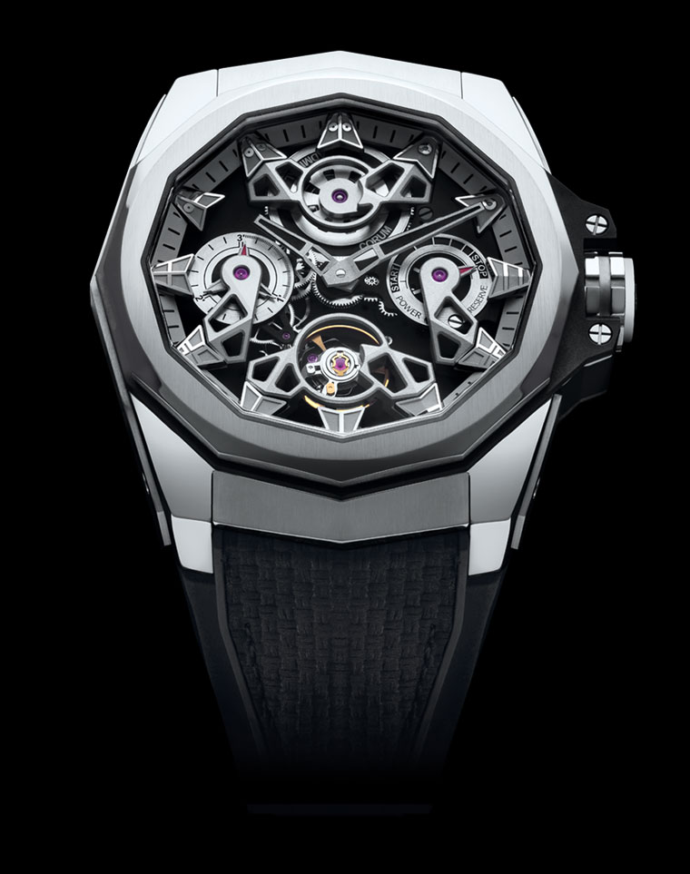

ADMIRAL 38

This Admiral 38 contemporary line embraces the design identity of the iconic Admiral collection born 60 years ago with its instantly recognizable 12-sided case and nautical pennants on the dial.
Yet at the same time, this readapted into a smaller 38-mm diameter collection writes a new chapter by infusing it with contemporary updates such as a giving it a more rounded shape and combining both polished and satin-brushed finishes on the case with an automatic movement.